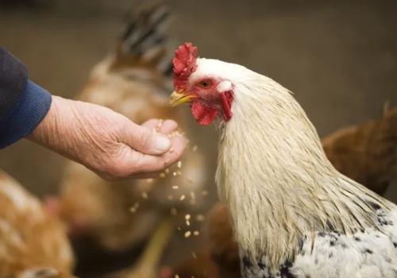

Industry Information
Home > News > Industry Information > Poultry Feed Additives: Examples and Their Role in Animal Health
Sep. 03, 2025
Poultry producers often face challenges such as disease outbreaks, inefficient feed conversion, or slow growth rates that directly impact farm productivity. One way to address these issues is through the use of feed additives for poultry, which are incorporated into diets to improve performance, support immune function, and maintain flock health. While not essential nutrients in themselves, these substances play a critical role in modern poultry production systems where efficiency and animal welfare must be balanced.
Feed additives for poultry are defined as ingredients that are included in rations in small amounts to achieve specific effects beyond basic nutrition. Unlike proteins, fats, or carbohydrates, they are not major energy sources. Instead, their purpose is to enhance digestion, optimize nutrient absorption, prevent health disorders, and support overall productivity.
The types of feed additives for poultry vary widely, ranging from probiotics and enzymes to organic acids and antioxidants. The choice of additive often depends on the production stage, the health challenges faced, and the quality of available feed ingredients.

To understand their function more clearly, it helps to review some commonly used categories:
Probiotics: Beneficial microorganisms that stabilize gut microflora, improving digestion and resistance to pathogens.
Prebiotics: Non-digestible carbohydrates that promote the growth of beneficial bacteria, supporting intestinal balance.
Enzymes: Substances such as phytase or xylanase that break down components of feed, releasing nutrients otherwise unavailable to the bird.
Organic acids: Compounds like formic or lactic acid that lower gut pH, inhibiting harmful bacteria and enhancing nutrient absorption.
Antioxidants: Additives that protect feed lipids and vitamins from oxidation, ensuring nutritional quality is maintained.
Coccidiostats: Compounds used to control coccidiosis, a common parasitic disease in poultry.
These categories illustrate the diversity of examples of feed additives that can be applied to poultry diets in practice.
The health of poultry flocks depends on a combination of good management, balanced nutrition, and disease prevention. Feed additives for poultry contribute to these goals in several ways:
Additives such as probiotics and prebiotics help maintain a stable microbial environment in the intestine. This balance reduces the risk of diarrhea, improves immune response, and enhances the ability of birds to cope with pathogens.
Enzyme additives increase the digestibility of feed components like phosphorus or fiber. As a result, birds obtain more nutrients from the same amount of feed, improving growth rates while reducing waste output.
The use of organic acids and coccidiostats supports prevention strategies against bacterial infections and parasitic diseases. This is particularly important in intensive farming systems, where disease spread can be rapid.
During stressful periods, such as transportation or environmental changes, certain examples of feed additives—like antioxidants or immune modulators—help reduce oxidative stress and maintain performance.
Different production phases require different strategies. For example, young chicks often benefit from probiotics and enzymes to establish healthy digestion early in life. Broilers raised for meat may require organic acids to maximize feed conversion efficiency. Layers, on the other hand, benefit from antioxidants to preserve egg quality.
Producers must also consider environmental concerns. By improving nutrient absorption, feed additives for poultry reduce nitrogen and phosphorus excretion, minimizing environmental impact. This aligns with the growing need for sustainable farming practices.
Although the benefits are clear, responsible use is essential. Producers should evaluate:
Scientific evidence: Not all additives are supported by strong data. Research-based selection ensures reliability.
Dosage and formulation: Additives must be included at proper concentrations to avoid inefficiency or negative effects.
Regulatory standards: Approval and usage levels vary by country, and compliance is necessary to ensure food safety.
Economic factors: While additives may increase feed costs, their benefits in growth performance and disease prevention often outweigh the investment.
As poultry production systems continue to evolve, the role of feed additives in supporting animal health is likely to expand. Future innovations may include precision additives tailored to specific flocks, as well as natural products derived from plants and fermentation processes to meet consumer demand for antibiotic-free poultry.
Ultimately, examples of feed additives underscore their importance as tools for improving nutrition, enhancing disease resistance, and reducing stress in poultry. By addressing these key challenges, feed additives for poultry enable producers to meet the global demand for safe, affordable, and sustainable animal protein.
As part of this development, companies like GOLIATH continue to contribute to the industry by providing technical expertise and research-based solutions in animal nutrition. With a focus on science-driven approaches, GOLIATH supports poultry producers in adopting feed additives that not only improve flock health but also promote sustainable farming practices.

Goliath Ingredients Holding Limited
1st Floor, Ellen Skelton Building, 3076 Sir Francis Drake’s Highway, Road Town, Tortola, VG1110, British Virgin Islands.
henry@goliathholding.com
Navigation
Email: henry@goliathholding.com